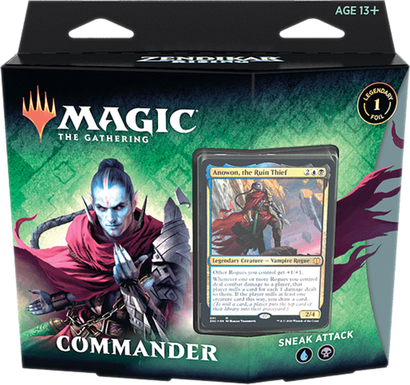
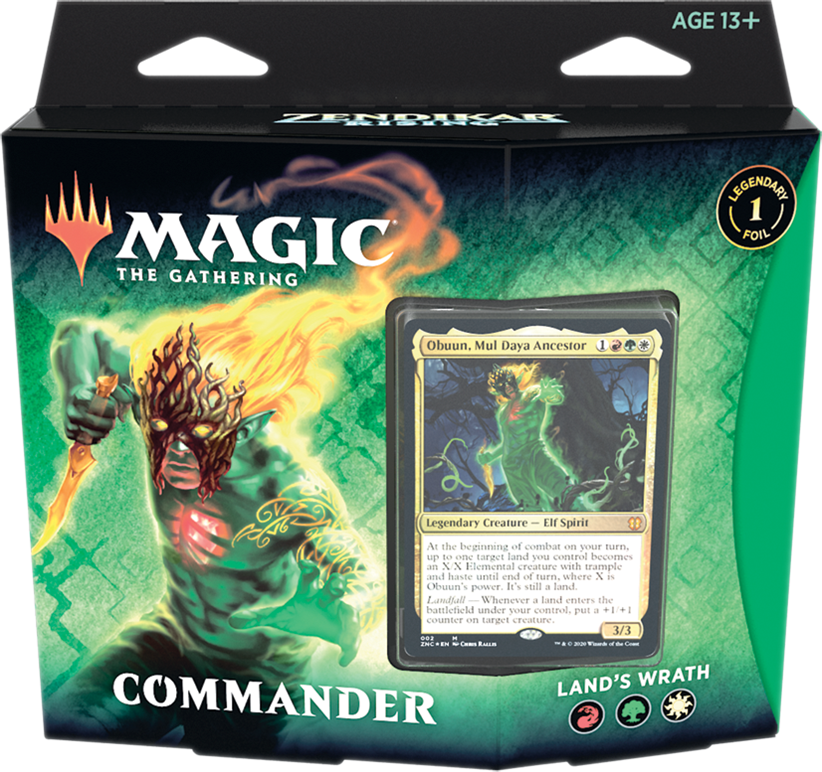

Este deck consiste em uma temática de tribal de Ladinos focado em ganhar vantagens com várias criaturas além da subtemática de triturar.
Por favor, clique na imagem abaixo para ser encaminhado para verificar a lista completa do decks:
Este deck consiste em uma temática de aterragem além de uma subtemática de ramp.
Por favor, clique na imagem abaixo para ser encaminhado para verificar a lista completa do decks:
